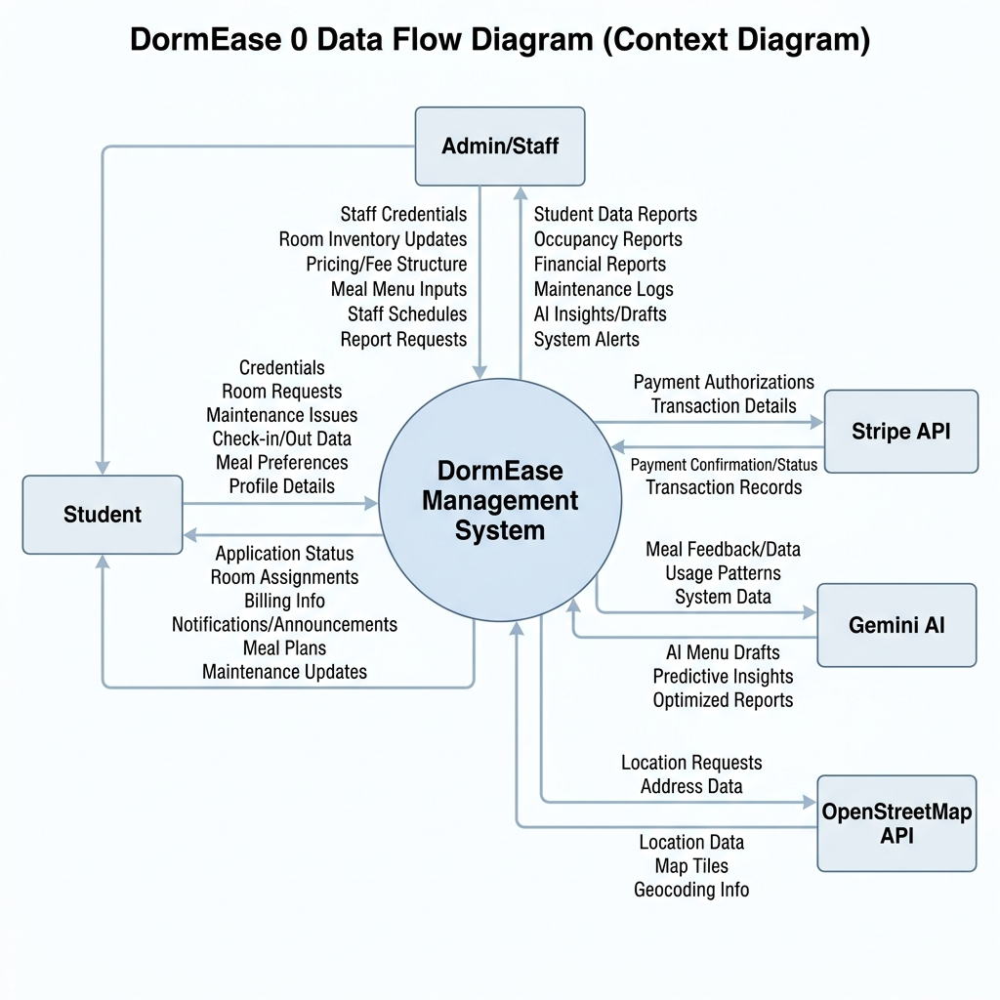
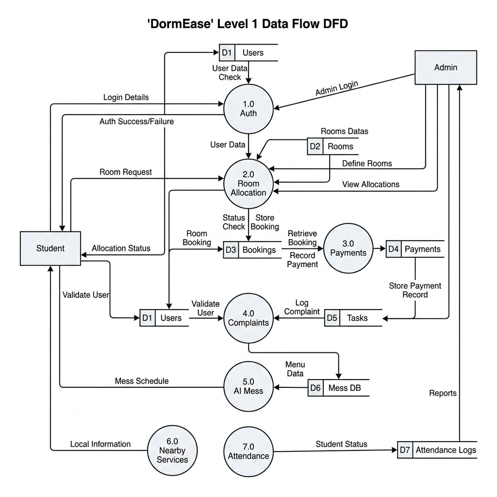

Subject: Data Flow Diagram (DFD) Report
Date: April 25, 2026
The Context Diagram provides a high-level overview of the system's boundaries. It identifies the external entities that interact with the DormEase Management System and the data flowing between them.

Figure 1: Level 0 Context Diagram
The Level 1 diagram decomposes the system into its primary functional processes. This level illustrates how data is transformed and stored within the application's core architecture.

Figure 2: Level 1 Process Diagram
| Process ID | Name | Responsibility |
|---|---|---|
| 1.0 | Auth & Profile | Identity verification and Aadhaar/ID management. |
| 2.0 | Room & Allocation | Room requests, inventory management, and occupancy. |
| 3.0 | Payments & Fines | Subscription billing and Stripe gateway integration. |
| 4.0 | Ops & Complaints | Ticketing system for maintenance and staff tasks. |
| 5.0 | AI Mess Management | AI-driven menu generation and student mess requests. |
| 6.0 | Nearby Services | Geolocation-based hospital, shop, and transport tracking. |
| 7.0 | Attendance Tracking | QR-based student entry/exit logging. |
| 8.0 | Analytics Engine | Data aggregation for revenue and performance reports. |
The following table outlines the persistent data stores utilized by the DormEase system to maintain state and history.
| Store ID | Name | Primary Data Contained |
|---|---|---|
| D1 | Users & Students | Login credentials, roles, and ID proof uploads. |
| D2 | Room Inventory | Room details, types, and capacity status. |
| D3 | Bookings & Req | Historical room assignments and change requests. |
| D4 | Payments & Fines | Invoices, transaction logs, and fine balances. |
| D5 | Complaints & Tasks | Maintenance tickets and resolution history. |
| D6 | Mess Menu & Req | Generated menus and student meal logs. |
| D7 | Attendance Logs | Secure timestamps for student entry/exit. |
The DFD analysis confirms a robust architecture capable of handling complex dormitory operations. The integration of external AI and payment services ensures a modern, scalable experience for both students and administrators.